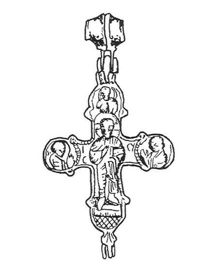
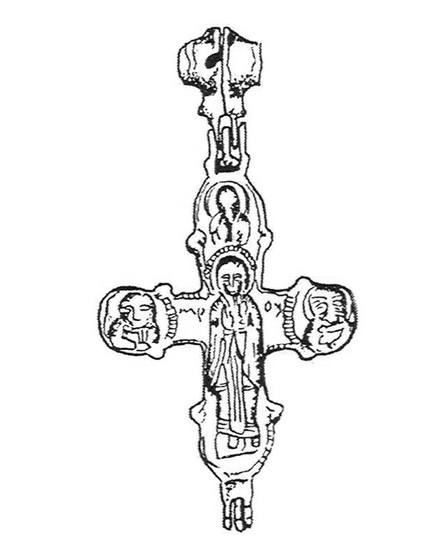

Catalog › CE-0536 · IAH2007-2-4
Encolpion bivalv, Slobidka (Рис. 2, 4)
sec. XII–XIII (1101–1300) · Slobidka, regiunea Ternopil, raionul Zalișcichi, Ucraina · Muzeul Regional de Studii Locale Ternopil (Тернопільський краєзнавчий музей, ТКМ), inv. ТКМ А № 6801
double-sided reliquary cross (enkolpion); c. XII–XIII (1101–1300); found at Slobidka, regiunea Ternopil, raionul Zalișcichi, Ucraina; kept at Muzeul Regional de Studii Locale Ternopil (Тернопільський краєзнавчий музей, ТКМ).




Identificare
- Categorie
- Encolpion bivalv (relicvar)
- Tehnică
- Turnare în relief; Gravare (incizie)
- Dimensiuni
- Î 80 × L 52 mm
Iconografie
- Avers
- Hristos Pantocrator; Sf. Ioan
- Descriere avers
- Hristos Pantocrator în veșmânt apostolic: chip oval cu nas mic și subțire, trăsături bine marcate; nimb cu cruce dublă; mâna dreaptă îndoită și ridicată în binecuvântare, în stânga o carte închisă; piciorul drept așezat drept, cel stâng întors în trei sferturi; picioarele pe un suport dreptunghiular; sub suport, suprafața crucii este umplută cu linii scurte oblice gravate. În medalionul de sus o jumătate de figură a lui Dumnezeu-Tatăl, cu nimb; în cele două laterale Maica Domnului și Sf. Ioan, în rugăciune, fără inscripții. Urechile de sus și de jos ale feței sunt în formă de rozetă cu cinci petale.
- Revers
- Maica Domnului Orantă
- Descriere revers
- Maica Domnului în picioare, cu palmele deschise în fața pieptului, în hiton și maforion; nimb cu mici crestături; picioarele pe un suport dreptunghiular. Deasupra capului o jumătate de figură de sfânt cu nimb. De o parte și de alta, jumătăți de figuri de sfinți cu capete disproporționat de mari, în mantii prinse cu fibulă; cel din stânga cu mustăți și barbă.
- Inscripții
- ІС (vertical), СХ (orizontal) lângă Hristos; МР, ОУ lângă Maica Domnului
Datare și atribuire
- Datare
- sec. XII–XIII (1101–1300)
- Tipologie
- Cruce cu brațe inegale, cu ureche biconică din două jumătăți
Descoperire
- Localitate
- Slobidka
- Regiune
- regiunea Ternopil, raionul Zalișcichi
- Țară
- Ucraina
- Context
- Necunoscut
- Coordonate
- 48.6540° N, 25.7310° E
- Precizia locului
- Doar localitatea
Păstrare și referințe
- Colecție
- Muzeul Regional de Studii Locale Ternopil (Тернопільський краєзнавчий музей, ТКМ)
- Nr. inventar
- ТКМ А № 6801
- Bibliografie
- М. Ягодинська, Нові культові речі з давньоруських пам’яток Західного Поділля, în „Матеріали і дослідження з археології Прикарпаття і Волині”, 11, 2007, p. 346–357 [Ягодинська 2007], p. 347–348, Рис. 2, 4, reprodusă la Рис. 2, 4 (p. 350). Descrisă și la В. Олійник, В. Олійник, Знахідки давньоруських енколпіонів на півдні Тернопільщини, în „Матеріали і дослідження з археології Прикарпаття і Волині”, 12, 2008, p. 391–392, Рис. 1, 6 (p. 391).
- Figura
- Рис. 2, 4
- Planșe
- Ягодинська 2007, p. 350
- Observații
- Piesă întreagă. Dimensiuni: 10,1×5,2 cm cu ureche, 8,0×5,2 cm fără ureche. Inscripția de lângă Hristos este «СХ» în Ягодинська 2007 și «СУ» în Олійник, Олійник 2008. Conform Олійник, Олійник 2008, piesa a fost găsită în 1982 pe câmpul Lanok din Slobidka (Maria Melnîk) și a intrat în fondurile muzeului regional Ternopil. Dumnezeu-Tatăl nu figurează în lista de icoane a bazei. Material: aliaj de cupru, fără precizare suplimentară. Coordonate: ale orașului Zalișcichi, centrul raionului (localitatea nu a putut fi localizată), aproximative, nu date în sursă.
Citare: Corpus Encolpiorum, CE-0536, Encolpion bivalv, Slobidka (Рис. 2, 4), --root/piese/IAH2007-2-4/ (accesat 2026-10-20).